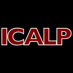

9 papers:
 CIKM-2008-Croft #approach #how #problem
CIKM-2008-Croft #approach #how #problem- Unsolved problems in search: (and how we approach them) (WBC), p. 1001.
- SAC-2007-ZengS #combinator #geometry #optimisation #problem
- Semi-mechanization method for a unsolved optimization problem in combinatorial geometry (ZZ, MS), pp. 762–766.
- CIAA-J-2004-BordihnHK05 #context-free grammar #problem #subclass
- Unsolvability levels of operation problems for subclasses of context-free languages (HB, MH, MK), pp. 423–440.
 TLCA-1999-David #λ-calculus
TLCA-1999-David #λ-calculus- Every Unsolvable lambda Term has a Decoration (RD), pp. 98–113.
- ALP-PLILP-1998-BruynoogheVWD #detection #logic programming #query #source code
- Detecting Unsolvable Queries for Definite Logic Programs (MB, HV, DAdW, MD), pp. 118–133.
- ESEC-FSE-1997-Jazayeri #problem #re-engineering
- Software Engineering — Old Problems, New Problems, and Unsolved Problems (Panel) (MJ), p. 530.
 SLP-1985-SawamuraT85 #optimisation #prolog #recursion
SLP-1985-SawamuraT85 #optimisation #prolog #recursion- Recursive Unsolvability of Determinacy, Solvable Cases of Determinancy and their Applications to Prolog Optimization (HS, TT), pp. 200–207.
- ICALP-1977-BertoniMT #automaton #probability #problem #recursion
- Some Recursive Unsolvable Problems Relating to Isolated Cutpoints in Probabilistic Automata (AB, GM, MT), pp. 87–94.
- STOC-1970-Lewis #complexity
- Unsolvability Considerations in Computational Complexity (FDL), pp. 22–30.